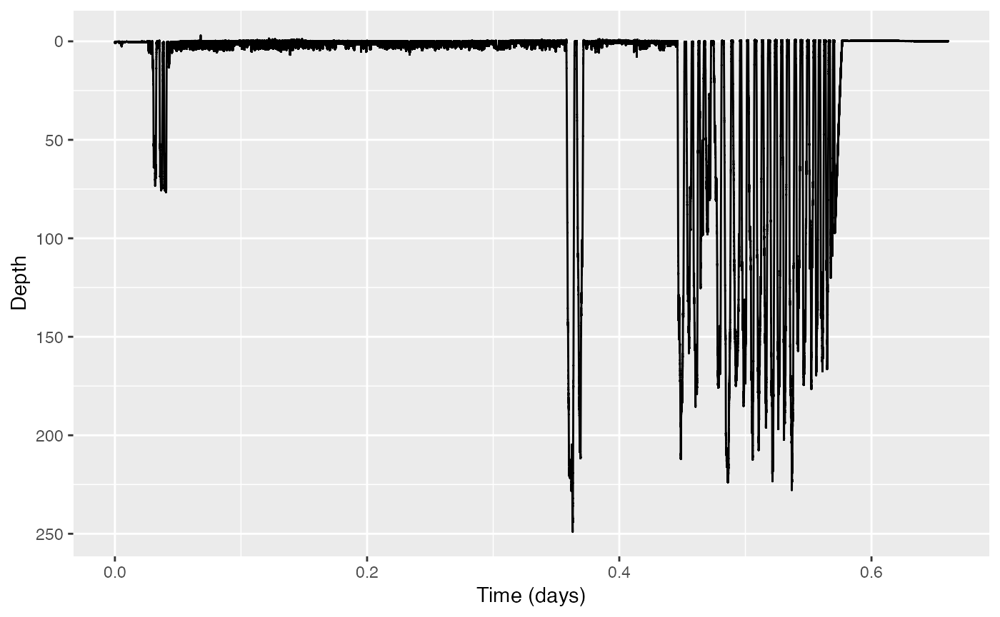

Rotation test
tagtools project team
2023-06-23
rotation-test.RmdWelcome to the rotation-test vignette! Thanks for
getting to know our package. We hope this dataset revives a sense of
wonder somewhere in your soul. In this vignette, you will use a rotation
test to test whether a certain hypothesis is actually meaningfully
true.
Estimated time for this vignette: 20 minutes.
These practicals all assume that you have R/Rstudio, some basic experience working with them, and can execute provided code, making some user-specific changes along the way (e.g. to help R find a file you downloaded). We will provide you with quite a few lines. To boost your own learning, you would do well to try and write them before opening what we give, using this just to check your work.
Additionally, be careful when copy-pasting special characters such as
_underscores_ and ‘quotes’. If you get an error, one thing to check is
that you have just a single, simple underscore, and
'straight quotes', whether 'single' or
"double" (rather than “smart quotes”).
Rotation test
We were very fortunate to obtain a number of test datasets from different sources that we have permission to make publicly available with the tag tool kit. One dataset (obtained from anonymous Scottish contacts) is particularly exciting and possibly unique in the world: a fragment of tag data obtained from a high-resolution movement tag deployed on Nessie, the Loch Ness Monster.
Unfortunately several of the tag sensors malfunctioned, but we were
able to salvage some dive depth data to be used in this example. The
dataset is called nessie.nc. If you want to run this
example, download the “nessie.nc” file from https://github.com/animaltags/tagtools_data and change
the file path to match where you’ve saved the files
- Read in the data:
library(tagtools)
nessie_file_path <- "nc_files/nessie.nc"
nessie <- load_nc(nessie_file_path)
str(nessie, max.level = 1)#> List of 2
#> $ P :List of 16
#> $ info:List of 17
#> - attr(*, "class")= chr [1:2] "animaltag" "list"And make a plot of the dive profile (because of course you want to see it):

- According to some Scottish lore, Nessie surfaces more often in the hour around noon than during the rest of the day (because the glare on the water, and the lure of lunch, make it more difficult for people to spot her then). But does she really? Use find_dives to find start times for all her submergences, which we will use as a proxy for breath times. In this case, you will want to use a threshold that is as shallow as practicable.
th <- # ??? set a very shallow threshold
#find dives
dt <- find_dives(nessie$P, mindepth = th)
str(dt, max.level = 1)#> 'data.frame': 3471 obs. of 4 variables:
#> $ start: num 0.52 0.64 0.84 1.2 1.48 1.6 1.76 1.88 2.12 2.24 ...
#> $ end : num 0.6 0.72 0.92 1.28 1.56 1.68 1.84 1.96 2.2 2.32 ...
#> $ max : num 0.601 0.606 0.622 0.615 0.615 ...
#> $ tmax : num 0.6 0.72 0.92 1.28 1.56 1.68 1.84 1.96 2.2 2.32 ...- Do you think you could just use a regression model for surfacing rate to answer this question? Why or why not?
No, because the data is autocorrelated? Uh,… because it’s just more complicated? help pls
- Use a rotation test to test whether the number of surfacings between 11:30 and 12:30 is actually higher than you’d expect.
# make time variables
t <- as.POSIXct(nessie$info$dephist_device_datetime_start, tz = 'GMT') + c(1:nrow(nessie$P$data))/nessie$P$sampling_rate
# find data times between 11:30 and 12:30
s <- as.POSIXct('2017-01-13 11:30:00', tz = 'GMT')
e <- as.POSIXct('2017-01-13 12:30:00', tz = 'GMT')
noon <- range(which(t < e & t > s))
#convert to seconds
noon <- noon/nessie$P$sampling_rate
#do test
RTR <- rotation_test(event_times = dt$start, exp_period = noon, full_period = c(0,length(nessie$P$data)/nessie$P$sampling_rate), n_rot = 10000, ts_fun = length)#> $result
#> statistic CI_low CI_up n_rot conf_level p_value
#> 1 153 0 855.025 10000 0.95 0.7427257- What can you conclude?
Since the p-value is so high, it appears that Nessie does not, contrary to popular belief, actually surface (significantly) more in the hour between 11:30am and 12:30pm.
And with that, great work! Now some of the mystery is forever gone… but knowledge is power!
If you’d like to continue working through these practicals,
consider dive-stats.
vignette('dive-stats')Animaltags home pages: http://animaltags.org/ (old), https://animaltags.netlify.app/ (new), https://github.com/stacyderuiter/TagTools (for latest beta source code), https://stacyderuiter.github.io/TagTools/articles/TagTools (vignettes overview)